Vestas｜Go/No-Go 檢具與校驗治具的 FOD 異物防呆（高辨識度 Onyx GF＋AI 機器視覺）
- 模具停機每小時約損失 7,000 美元產值
- 單次工具遺留事故若需全天修補，單一廠區損失可達 168,000 美元以上
- 零件下機即符合 ISO 安全色標準，免噴漆、免染色（後處理歸零）
材料系統
從複合基材、連續纖維強化，到高溫工程塑料與金屬。每一種材料都對應一類真實的產線問題。
選材指南
先講零件要承受什麼，再挑材料。下面每一項都對應本頁的規格數字與機種限制。
取代鋁件的高強度治具與結構件
Onyx ＋ 連續碳纖維
連續碳纖維抗拉 800 MPa，強度重量比最高。
反覆衝擊、需要韌性
Kevlar®（X7）· 玻璃纖維
玻纖缺口衝擊 2600 J/m；Kevlar® 延展性優於玻纖。
長時間高溫環境
HSHT 玻纖 · ULTEM™ 9085 · Vega™
HSHT 熱變形 150°C；ULTEM™ 9085 為 175°C（FX20）。
阻燃：航太、軌道、車輛內飾
Onyx FR-A ＋ 碳纖維 FR-A
UL 94 V-0 Blue Card（厚度 ≥ 3 mm）。
電子與半導體防靜電
Onyx ESD v2
表面電阻 10⁵–10⁹ Ω（Eiger 預設參數）。
產線色彩管理、非導電
Onyx GF
六種顏色，FX10／FX20 支援。
食品接觸
Nylon White FS
NSF/ANSI 51 認證，僅 FX10。
彈性、緩衝、密封
Smooth TPU 95A
蕭氏硬度 95 A、斷裂應變 550%。
金屬零件與模具嵌件
17-4PH · H13 · 316L
FX10 加裝 Metal Kit，列印 → 清洗 → 燒結。
低成本外觀打樣
Precise PLA
八種顏色，X7 系列。
01 — 複合基材
基材決定零件的表面、耐化學性與耐熱基準。連續纖維無法單獨列印，必須與基材共印。
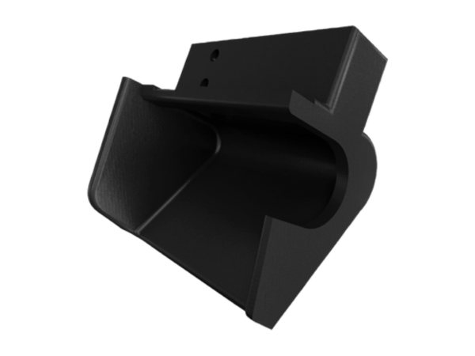
微碳纖填充尼龍，通用基材。抗拉屈服 40 MPa（ASTM D638）· 熱變形 145°C（D648 B, 0.45 MPa）· 密度 1.2 g/cm³。表面平整、耐化學、可直接當治具使用。
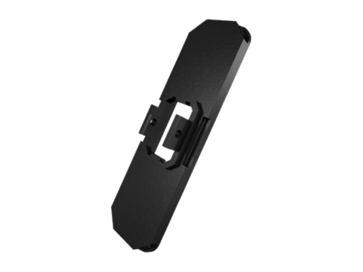
阻燃短碳纖尼龍，航太／軌道／車輛內飾。抗拉 40 MPa · 熱變形 145°C · UL 94 V-0 Blue Card（厚度 ≥ 3 mm）。可搭配連續纖維強化（各機種可用的纖維不同）。
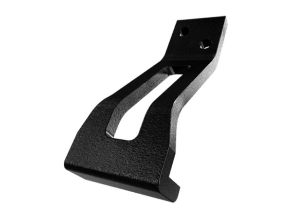
靜電消散型，電子與半導體治具。抗拉屈服 52 MPa · 熱變形 138°C。表面電阻 10⁵–10⁹ Ω（Eiger 預設參數）；於原廠指定的最佳 ESD 列印設定下可達 10⁵–10⁷ Ω。
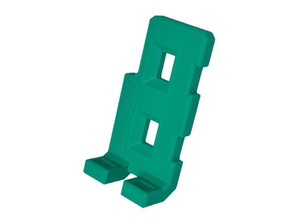
玻纖填充、非導電，六種顏色可做色彩編碼治具。抗拉屈服 57.9 MPa · 熱變形 138°C（1.8 MPa 高負載條件）。僅 FX10／FX20 支援，且須先更換硬化塑料噴嘴。
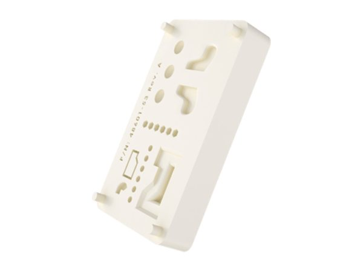
未填充尼龍，高延展、可上漆。抗拉屈服 51 MPa · 斷裂應變 150% · 熱變形 41°C。適合需要韌性與後加工外觀的零件。FX20 不支援。
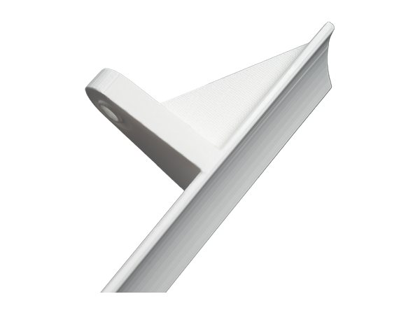
食品接觸級尼龍。NSF/ANSI 51 認證（酒精類食品接觸除外），並符合 FDA 21 CFR 相關規範。抗拉斷裂 47 MPa · 熱變形 41°C。僅 FX10 支援。
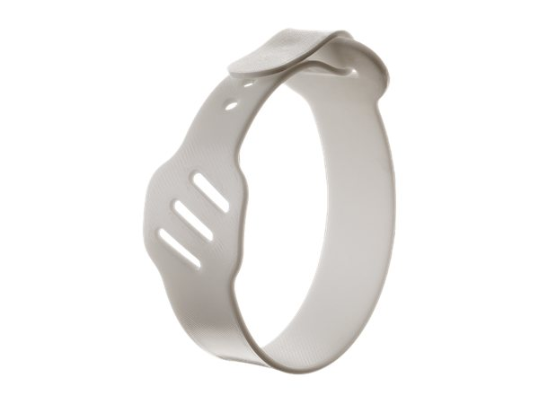
彈性體，用於皮帶、緩衝件與墊圈。蕭氏硬度 95 A · 斷裂應變 550% · 密度 1.2 g/cm³。適用 X7 系列。
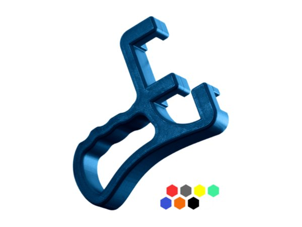
非功能性打樣專用，八種顏色。抗拉屈服 31 MPa · 熱變形 52°C。不可搭配連續纖維強化。適用 X7 系列。
新材料
適用於工廠生產線的彩色複合材料
Onyx GF™ 是一種短玻璃纖維填充尼龍線材，專為工業工具及最終產品零件設計，不僅具備 Onyx 系列優異的表面處理、尺寸精準度與列印可靠性，更增添了功能性的色彩與非導電特性。
本產品提供六種色彩選擇，無需額外流程即可為生產現場帶來視覺上的區隔——在需要採用顏色編碼、可識別工具的營運規定中，支援符合安全規範並實現防錯工作流程。
Onyx GF 適用於連續纖維增強的規格，可滿足更高負載的應用需求，專為汽車、航太、國防及其他對材料性能與視覺效果有著嚴格要求的製造環境所設計。

數值出自 Markforged Onyx GF 原廠材料規格書 V01：FX10 列印、層厚 125 µm、XY 方向、依 ASTM D618 調濕後測試。熱變形溫度在 1.8 MPa 負載下量測，與 Onyx 系列的 0.45 MPa 條件不同，不能直接比較。


02 — 連續纖維強化
連續纖維以完整長絲鋪放於零件內部，而非短纖混料。這是 Markforged 與一般 FFF 的根本差異，也是強度數量級差距的來源。
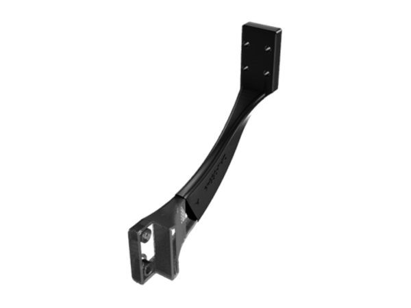
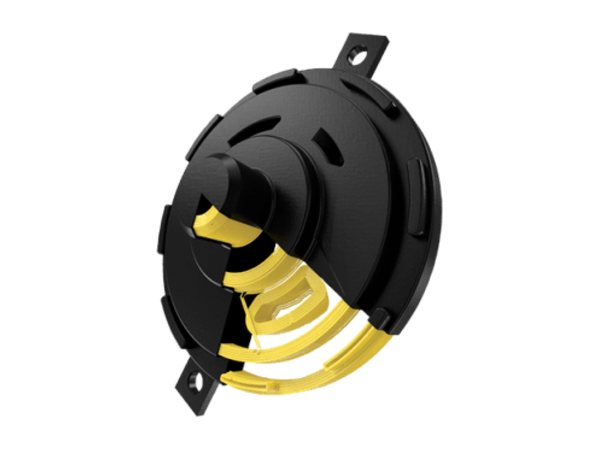
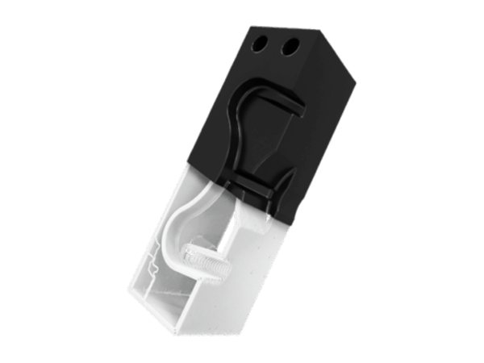
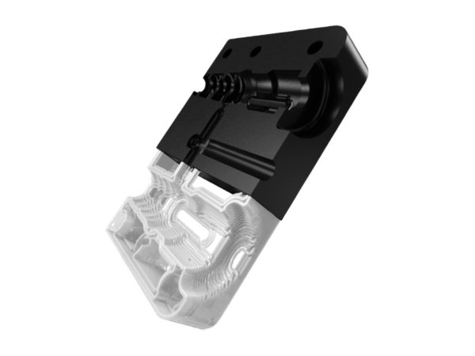
| 連續碳纖維 Continuous Carbon Fiber | 抗拉 800 MPa · 彎曲 540 MPa · 熱變形 105°C — 強度重量比最高，可取代加工鋁件 |
| 碳纖維 FR-A Carbon Fiber FR-A | 抗拉 760 MPa · 彎曲 540 MPa · 熱變形 105°C — 阻燃版本，只能補強 Onyx FR-A |
| Kevlar® 芳綸纖維 | 抗拉 610 MPa · 缺口衝擊 2000 J/m — 耐久性佳、延展性優於玻纖，適合反覆與突發載荷。適用 X7／X7 FE |
| 玻璃纖維 Fiberglass | 抗拉 590 MPa · 缺口衝擊 2600 J/m — 入門連續纖維，性價比最佳。FX10 不支援 |
| 高溫玻纖 HSHT Fiberglass | 抗拉 600 MPa · 缺口衝擊 3100 J/m · 熱變形 150°C — 五種通用連續纖維中唯一耐溫達 150°C。適用 X7／X7 FE |
| 高溫碳纖 Carbon Fiber HT / HT-A | 抗拉 800 MPa · 熱變形 190°C — 僅 FX20，且只能補強 ULTEM™ 9085 或 Vega™ |
複合材料製程
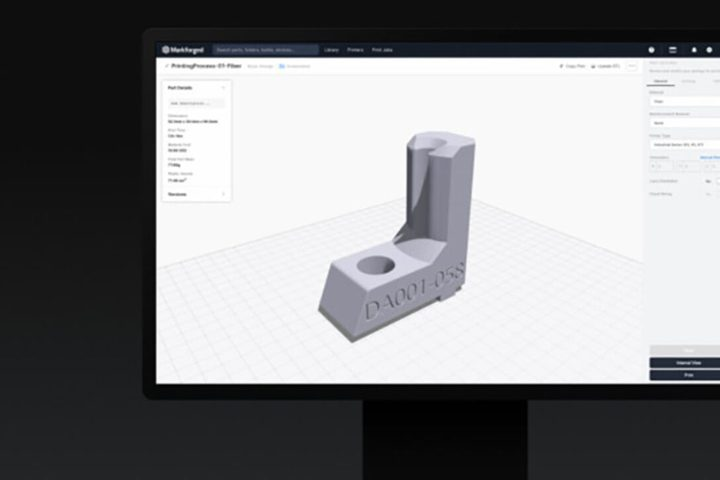
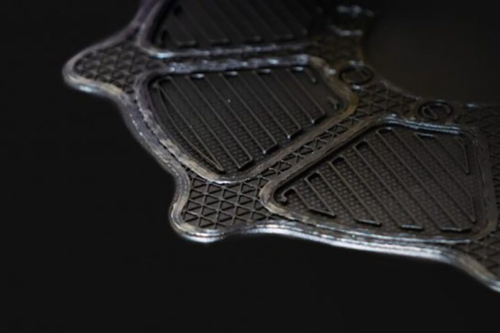
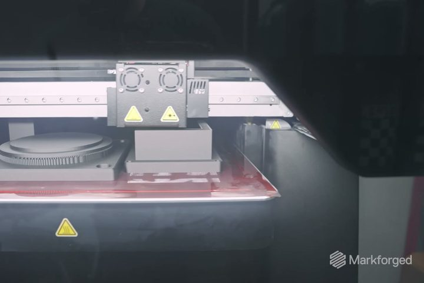
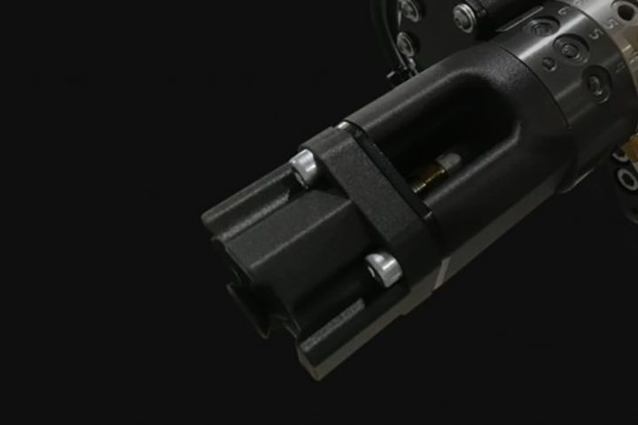
03 — 高溫工程材料
兩種材料皆僅適用 FX20。FX20 加熱腔體最高可達 200°C 穩態控溫，是列印這類材料的前提。
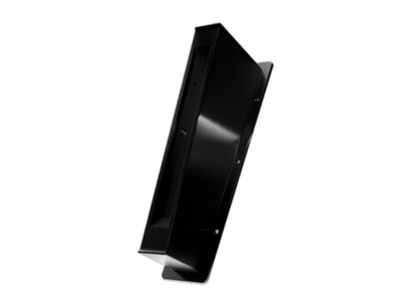
航太級 FST 高性能熱塑，用於量產機艙件。抗拉 76.5 MPa · 彎曲 134.5 MPa · 熱變形 175°C（0.45 MPa 與 1.82 MPa 兩種負載下皆為 175°C）· 密度 1.12 g/cm³。可搭配專用支撐材，並以 CF-HT／HT-A 強化。
碳纖填充 PEKK，超高性能耐高溫耐化學。抗拉 87.6 MPa · 彎曲 140.2 MPa · 壓縮 221.3 MPa · 熱變形 165.1°C（0.45 MPa）／150.8°C（1.8 MPa）· 密度 1.27 g/cm³。逸氣表現 TML 0.47%、CVCM 低於 0.01%（ASTM E595-15）。
04 — 金屬材料
FX10 加裝 Metal Kit 後即具備金屬列印能力。製程為列印 → Wash-1 清洗 → Sinter-2 燒結，金屬層厚 127 µm（燒結後），燒結後成品最大 292 × 132 × 131 mm、10 kg。
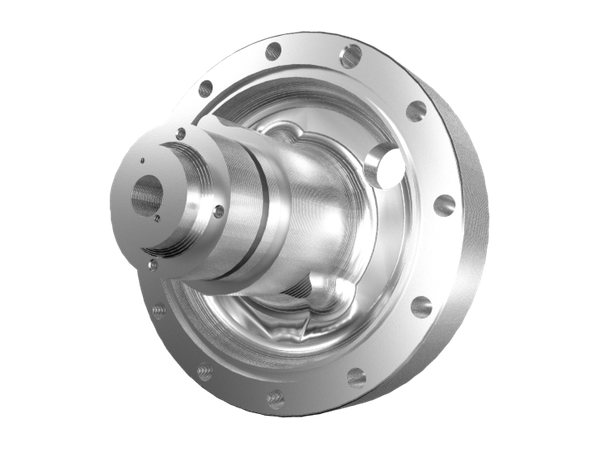
析出硬化不鏽鋼，通用金屬首選。H900 熱處理後：抗拉強度 1230 MPa · 0.2% 降伏 1050 MPa · 延伸率 13% · 硬度 38 HRC · 相對密度 96.4%。耐蝕性通過 ASTM F1089。
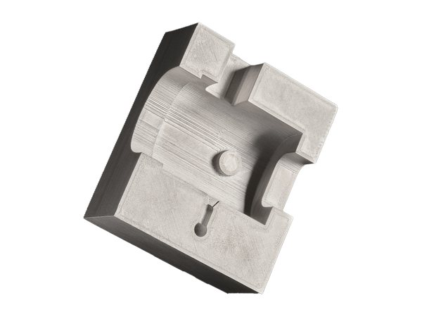
熱作模具鋼，用於高硬度工裝與模具嵌件。熱處理後：抗拉強度 1680 MPa · 0.2% 降伏 1250 MPa · 延伸率 4.7% · 硬度 45 HRC。未熱處理（燒結態）：抗拉 1540 MPa · 硬度 40 HRC。
沃斯田鐵系不鏽鋼，耐蝕性優於 17-4PH，適合化工、海洋與醫療環境。FX10 Metal Kit 支援。完整機械性能數據請向我們索取原廠資料。
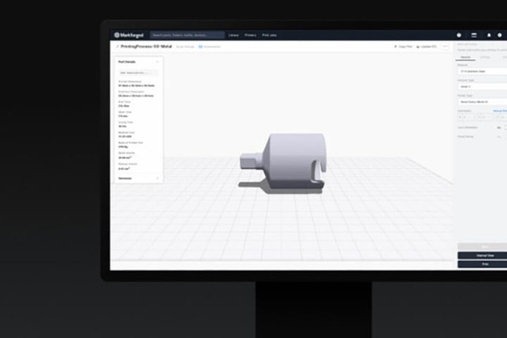
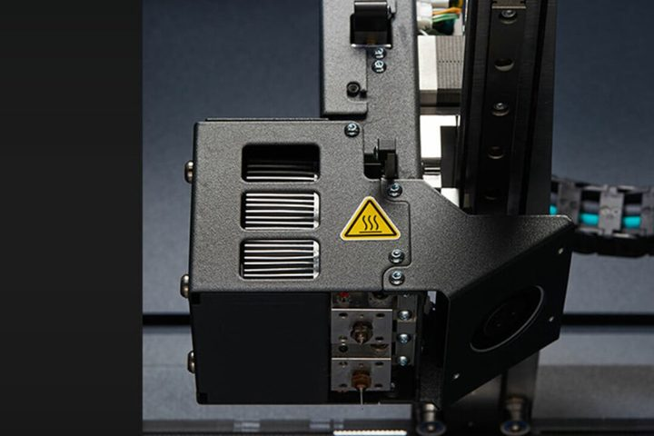
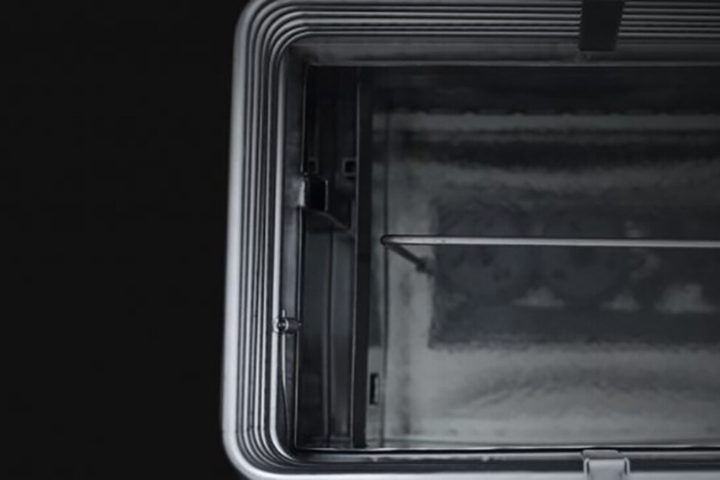
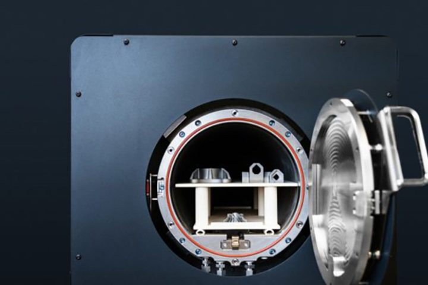
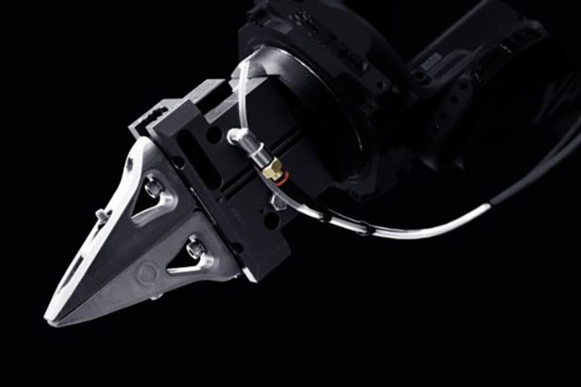
05 — 機種相容性
| FX10（＋Metal Kit 選配） | Onyx · Onyx FR-A · Onyx ESD · Onyx GF · Nylon White · Nylon White FS ／ 連續碳纖維 · 碳纖維 FR-A ／ 金屬：17-4PH、316L、H13 |
| FX20 | Onyx · Onyx FR-A · Onyx ESD · Onyx GF ／ 連續碳纖維 · 碳纖維 FR-A · 玻璃纖維 · 高溫碳纖 CF-HT／HT-A ／ 高溫工程材料：ULTEM™ 9085、Vega™ PEKK |
| X7 · X7 Field Edition | Onyx · Onyx FR-A · Onyx ESD · Nylon White ／ 連續碳纖維 · 碳纖維 FR-A · Kevlar® · 玻璃纖維 · 高溫玻纖 HSHT |
| 複合材料層厚 | 50 – 250 µm |
| 金屬層厚（FX10 Metal Kit） | 127 µm（燒結後） |
所有數值取自 Markforged 原廠公開材料資料表，並標註對應測試標準。不同測試標準或不同負載條件下量測的數值不可直接比較，本頁未做跨標準彙總。Onyx GF 的熱變形溫度以 1.8 MPa 負載量測，與 Onyx 系列的 0.45 MPa 條件不同。材料供應狀態依機種與地區而異，請與我們確認。
06 — 規格書下載
| 材料 | 版本 | |
|---|---|---|
| Onyx · Onyx FR · Onyx ESD · Nylon White · 連續纖維（碳纖維、Kevlar®、玻纖、HSHT 玻纖） | REV 5.3 | 下載 PDF ↓ |
| Onyx FR-A · 碳纖維 FR-A（航太版阻燃材料） | REV 1.2A | 下載 PDF ↓ |
| Onyx ESD v2 | REV 2 | 下載 PDF ↓ |
| Onyx GF | — | 下載 PDF ↓ |
| Nylon White FS | REV 1 | 下載 PDF ↓ |
| Smooth TPU 95A | REV 1.1 | 下載 PDF ↓ |
| Precise PLA | — | 下載 PDF ↓ |
| ULTEM™ 9085 | REV 2A | 下載 PDF ↓ |
| Vega™（碳纖填充 PEKK） | REV 4 | 下載 PDF ↓ |
| 17-4PH 不鏽鋼 v2 | REV 1.1 | 下載 PDF ↓ |
| H13 工具鋼 v2 | REV 1.1 | 下載 PDF ↓ |
| FX20 機台規格書（含高溫碳纖 CF-HT／HT-A） | REV 3 | 下載 PDF ↓ |
316L 不鏽鋼的完整機械性能數據請向我們索取原廠資料。
07 — 常見問題
不行。連續纖維必須與基材（例如 Onyx）共印，由 Eiger 決定鋪放在哪些層、哪些路徑。
要看負載條件。Onyx 的 145°C 是在 0.45 MPa 下量測，Onyx GF 的 138°C 是在 1.8 MPa 高負載下量測，條件不同不能直接比較。
僅 FX10 與 FX20 支援，並須先更換硬化塑料噴嘴（Hardened Plastic Nozzle）。
燒結後成品最大 292 × 132 × 131 mm、10 kg。製程為列印 → Wash-1 清洗 → Sinter-2 燒結，金屬層厚 127 µm（燒結後）。
中文版由原廠翻譯，更新時間通常晚於英文版。本頁下載的是英文現行版，版本號標在表上。